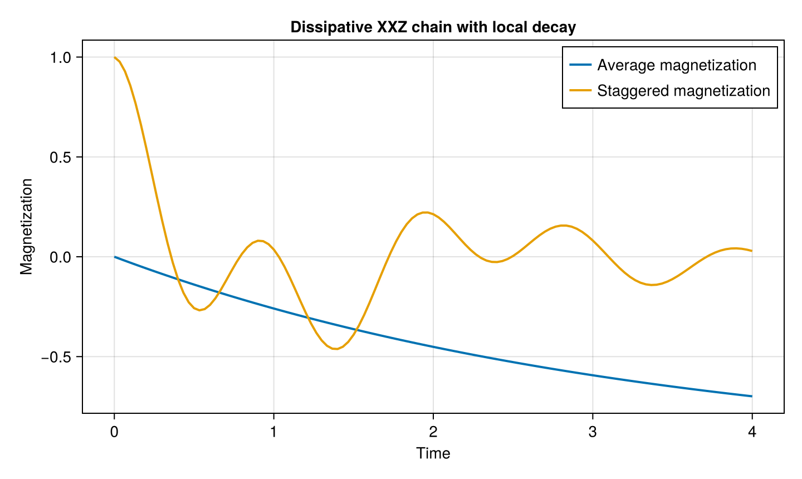

Dissipative XXZ Chain
A many-body spin system becomes an open quantum system when it exchanges energy or information with an environment. A standard example is an interacting XXZ chain subject to local spontaneous emission.
We consider the Hamiltonian
\[H = \sum_{i<j} J_{ij} \left[ J_{xy} \left( \sigma_i^+ \sigma_j^- + \sigma_i^- \sigma_j^+ \right) + J_z \sigma_i^z \sigma_j^z \right],\]
with nearest-neighbor couplings and local collapse operators
\[L_i = \sqrt{\gamma}\,\sigma_i^-.\]
The density matrix obeys the Lindblad master equation
\[\frac{d\rho}{dt} = -i[H,\rho] + \sum_i \left( L_i \rho L_i^\dagger - \frac{1}{2} \left\{ L_i^\dagger L_i,\rho \right\} \right).\]
Starting from a Néel state, coherent XXZ interactions compete with irreversible spin relaxation.
Model
using OpenSpinDynamics
using SparseArrays
using CairoMakie
N = 4
γ = 0.3
coupling = NearestNeighborCoupling(
0.0,
N,
)
model = SpinModel(
N;
Jxy=1.0,
Jz=0.5,
coupling=coupling,
)
ops = spin_operators(N)Initial state
We initialize the chain in a Néel product state,
\[|\psi_0\rangle = |\uparrow\downarrow\uparrow\downarrow\rangle,\]
and convert it to a density matrix.
ψ0 = neel_state(
N;
direction=:z,
)
ρ0 = sparse(ψ0 * ψ0')Local decay
Each spin is coupled independently to a zero-temperature environment through a lowering operator.
lindblad_ops = [
sqrt(γ) * ops.minus[i]
for i in 1:N
]Observables
We monitor two quantities.
The average longitudinal magnetization is
\[M_z = \frac{1}{N} \sum_{i=1}^{N} \sigma_i^z,\]
while the staggered magnetization is
\[M_s = \frac{1}{N} \sum_{i=1}^{N} (-1)^{i-1}\sigma_i^z.\]
Mz = sum(
ops.z[i]
for i in 1:N
) / N
Mstag = sum(
(-1)^(i - 1) * ops.z[i]
for i in 1:N
) / N
times = collect(
range(0.0, 4.0; length=121)
)For the initial Néel state, the uniform magnetization is zero while the staggered magnetization is one.
initial_Mz = real(ψ0' * Mz * ψ0)
initial_Mstag = real(ψ0' * Mstag * ψ0)
(initial_Mz, initial_Mstag)(0.0, 1.0)Lindblad evolution
For this small chain we use the exponential Lindblad backend.
result = evolve(
model,
ρ0,
times,
[Mz, Mstag];
method=:expm,
lindblad_ops=lindblad_ops,
)The first column contains $\langle M_z\rangle$ and the second contains $\langle M_s\rangle$.
Magnetization dynamics
fig = Figure(size=(720, 430))
ax = Axis(
fig[1, 1];
xlabel="Time",
ylabel="Magnetization",
title="Dissipative XXZ chain with local decay",
)
lines!(
ax,
times,
result[:, 1];
label="Average magnetization",
linewidth=2,
)
lines!(
ax,
times,
result[:, 2];
label="Staggered magnetization",
linewidth=2,
)
axislegend(ax)
fig
The staggered order decreases as the interacting system evolves away from the initial Néel state. At the same time, spontaneous emission drives the spins toward the down-polarized state, causing the average longitudinal magnetization to become increasingly negative.
This example combines coherent many-body XXZ dynamics with local Markovian dissipation using the same high-level evolve interface.